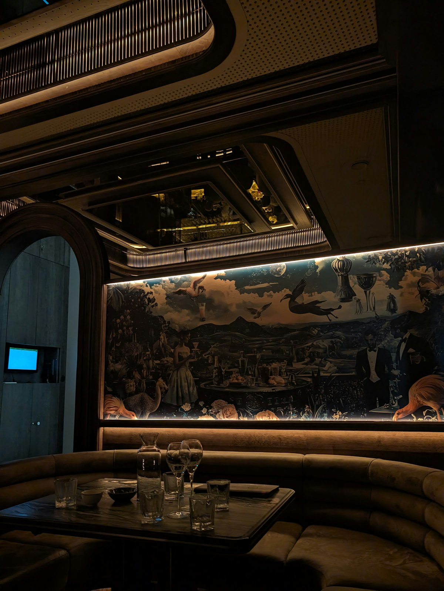
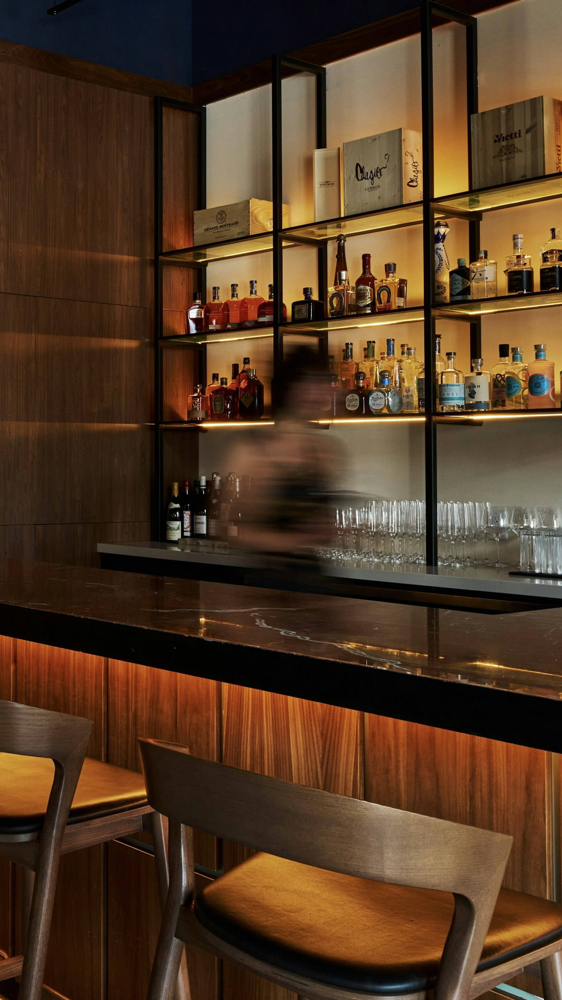
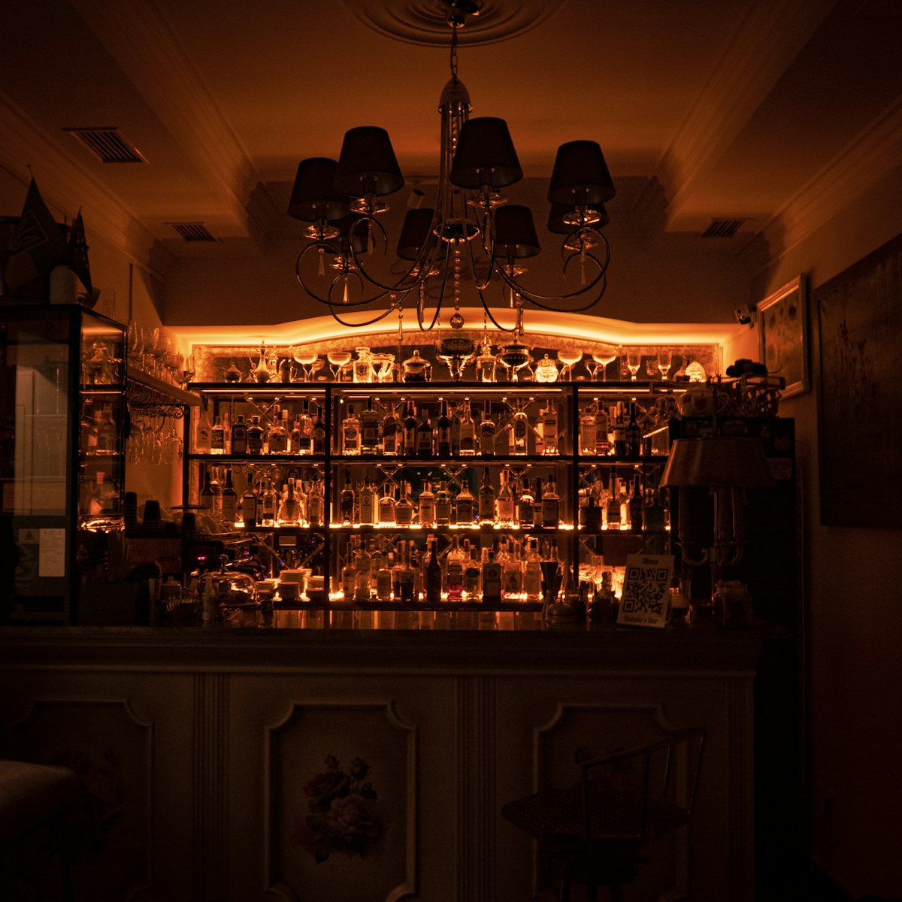
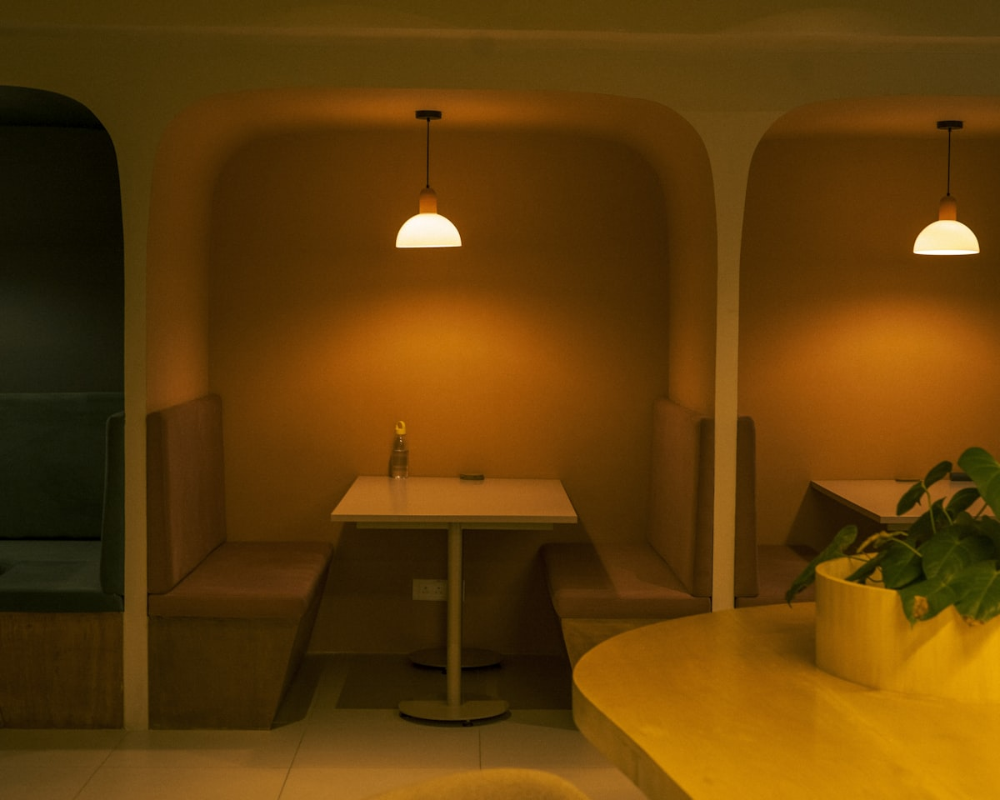
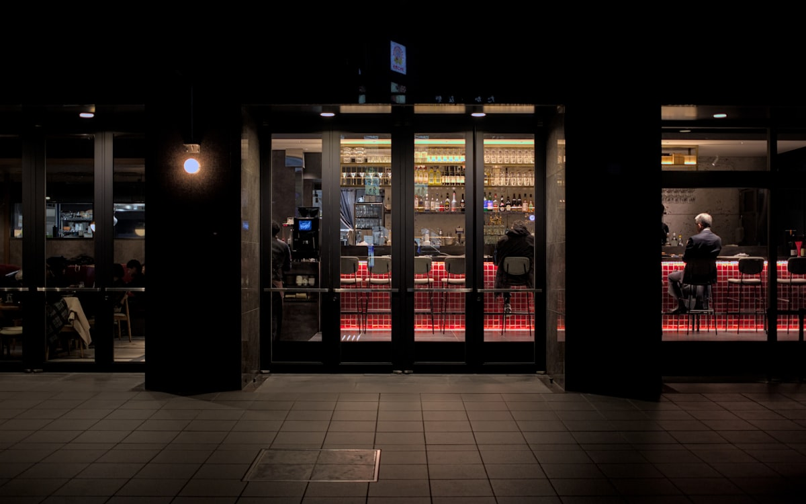

Commercial
Bar à cocktails niché dans une cave voûtée du quartier Saint-Pierre. L'enjeu : transformer un sous-sol brut en un lieu intimiste et chaleureux. Comptoir en marbre noir veiné, étagères en laiton brossé, banquettes en cuir cognac. L'éclairage indirect sculpte les voûtes en pierre et crée une atmosphère feutrée, entre speakeasy et salon privé.




